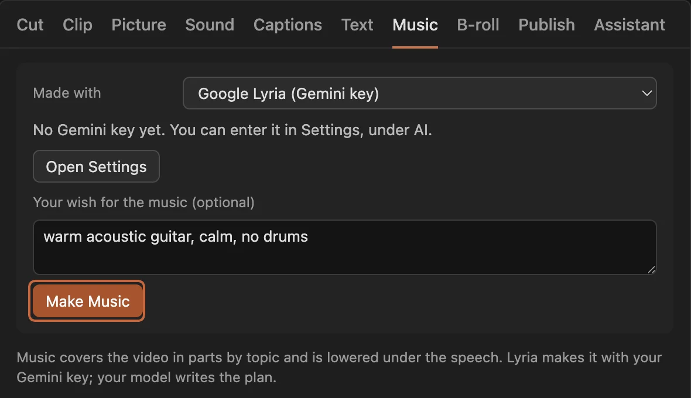

Music
The Music tab makes music for your video, in parts that follow its topics, and keeps it under your voice.

Make music
- Choose who makes itMade with: Google Lyria (Gemini key) or Eleven Music (ElevenLabs key). Enter the key in Settings › AI; the tab says whether it is saved.
- Say what you want, if you likeYour wish for the music (optional): a mood, an instrument, a tempo.
- Make itPress Make Music. Your AI model writes the plan, part by part, and the music service makes each part.
Eleven Music uses your ElevenLabs credits (paid plans only), and Kilnframe asks before it does. If a part could not be made, the tab says This part got no music.; Make the Music Again tries again.
Under the speech
The music is lowered under the speech by itself (Under speech). If you cut after making it, its level no longer fits: press Update the Level. The music track's level and the dip under speech are in the Sound tab.
Your own music
Put your own music on the music track (A3) from Media. Pick it, and in the Clip tab press Last to the End of the Video: short music loops with smooth seams, long music is cut, and either way it fades out at the end. Find Beats marks its beats to cut to (Timeline).